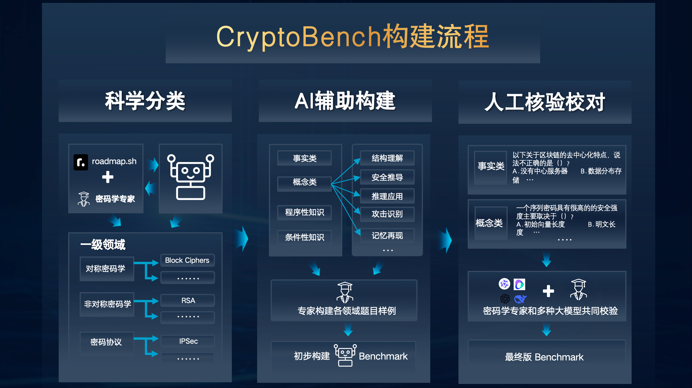

玄知大模型
CryptoLLM - 密码学大模型平台
致力于重塑乃传统密码算法与密码协议的分析设计模式，革新密码工程的实现方式
视频介绍
深入了解玄知大模型的技术原理和密码学能力，探索AI在密码领域的创新应用
数据构成
CryptoLLM 数据集结构全面，覆盖密码学多个核心方向与细分领域，为相关 AI 研究提供丰富且高质量的训练与测试资数据。
四阶筑基
通过行业知识沉淀、技能淬炼、交互增强与人类偏好对齐，逐步打造面向密码学的高性能大模型。
基准构建
通过科学分类、AI 辅助生成与人工核验三步流程，构建高质量的密码学大模型评测基准。

bench理念设计
涵盖 12 个核心方向与 74 个子领域，难度分布合理，全面反映密码学全景版图。
智能体赋能
融合大模型与智能体技术，支持安全多方计算的自动化规划、编码、测试与验证，全流程助力密码工程落地。
模型评估
评估结果
关键发现
- 玄知大模型在 12 个密码学核心方向测试中均取得领先成绩，显著优于通用大模型与主流 AI 工具
- 在密码算法分析、协议设计与工程实现三大领域均展现出卓越性能和专业化优势
- 支持自动化算法建模、协议安全验证与工程性能优化，显著降低研发门槛、提升效率与质量
- 已成功应用于多方安全计算等前沿场景，推动密码学技术智能化落地
关于玄知大模型
一、"玄"字在《道德经》中的出处与寓意
出处
- 《道德经》第一章："玄之又玄，众妙之门。"
寓意
- "玄"在道家哲学中指代深奥、幽远、不可言说、宇宙本源，是超越表象的本质。
- 用于模型命名，强调深不可测、通达本源、掌控大道，正契合加密算法的复杂性和AI智能的深度。
二、"知"字在《道德经》中的出处与寓意
出处
- 《道德经》第五十五章："知和曰常，知常曰明。"
寓意
- "知"在《道德经》中代表智慧、认知、洞察、理解万物本质，是获得"明"与"通达"的基础。
- 在AI/密码学领域，"知"象征模型的认知力、推理力、自我反思与判断。
三、组合解释
玄知大模型，即以模型智能，探幽玄之理、知晓安全奥义。寓意大模型如道家哲学中"玄"一般，能够洞悉万物根本（智能、数据、算法的本质），又如"知"一般，具备智慧与自我提升、推理洞察的能力，既深邃又明达，既神秘又翔智。
- 用于密码学，强调洞悉安全本质，推理复杂密码关系。
- 用于AI，突出强大认知与自学习能力。
四、Logo设计理念
玄知大模型的 Logo 融合了三重意象
- 莫比乌斯环 - 象征应数字世界，由密码安全的形成闭环
- 阴阳太极 - 契合"玄中求知、知中见道"的理念
- 中心似"玄"字 - 直观传达深奥与隐秘的意象
总结
- "玄"：道的本源，奥秘无穷。
- "知"：明察洞观，智慧通达。
- "玄知大模型"：深奥智能，洞观未来。